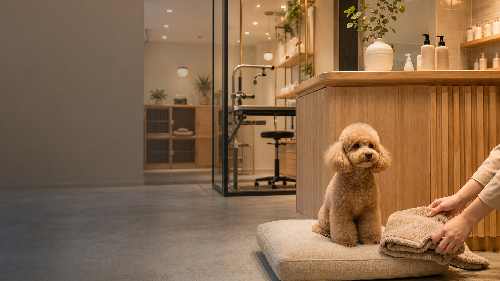

ワクチン、持ち物、受付時間を事前に確認。

Image Update Flow
フォームで受け取った写真を、ページ内で自然に流します。
送信された画像はアプリ側で検証・リサイズ後、この写真スロットへ差し替えます。

サイズ別、犬種別、オプションを整理。
次回目安、LINE予約、ケア用品提案まで掲載。
予約前条件
料金、犬種サイズ、持ち物、ワクチン条件をスマホで確認しやすく配置。
地域名とサービス名
トリミング、ホテル、ペット用品などの検索語に合わせて情報整理。
LINE予約と空き確認
条件確認後に、LINE・電話・フォームへ迷わず進める導線を用意。
料金・犬種・持ち物更新
サイズ別料金、預かり条件、注意事項、FAQを差し替えやすく設計。
Marketplace Grade
料金、条件、安心材料をそろえ、LINE予約へ進める商品設計。
ペット関連サイトはかわいさだけでは予約されません。料金、犬種区分、ワクチン条件、持ち物、スタッフの安心感を先に見せます。
初回利用前の確認を再現
トリミング、ホテル、条件、料金を確認してLINE予約へ進む流れを見られます。
LINE予約と空き確認
メニュー確認後に、予約、ホテル相談、電話問い合わせへすぐ進めます。
料金表と預かり条件を差し替え
犬種サイズ、オプション、ワクチン条件、店内写真、営業時間、予約URLを変更できます。
休業日と注意事項を更新
混雑日、季節キャンペーン、ホテル空き状況、持ち物、FAQを継続更新できます。
Safety Booking Board
初回予約前に、飼い主が知りたい条件を先に見せる。
ペットサロンでは、料金だけでなく、ワクチン、犬種・サイズ、持ち物、緊急時対応が見えると安心して予約できます。
利用条件
ワクチン、年齢、体調、持病の確認項目を予約前に表示。
初回確認を短縮犬種・サイズ別料金
小型・中型・大型、猫対応、毛玉やオプション料金を整理。
料金の誤解を防ぐ持ち物リスト
ごはん、リード、ワクチン証明、いつものおもちゃなどを案内。
当日の不安を軽減緊急時対応
滞在中の連絡方法、提携動物病院、写真報告を見せます。
ホテル予約に安心
First booking check
ワクチン
サイズ
持ち物
Pet Hotel
預ける前に知りたいことを、まとめて見せる。
ケージ環境、散歩、食事、持ち物、緊急時対応を先に出して、電話前の不安を減らします。
利用条件を予約前に案内。
ごはん、リード、安心グッズ。
滞在中の様子を写真で共有。
Reservation
LINE予約、電話、フォーム。店舗に合わせて差し替えできます。
初回の予約では、犬種・サイズ・希望メニュー・ワクチン確認が必要です。先に入力項目を見せることで、問い合わせ後のやり取りも短くできます。
Repeat Design
初回予約だけでなく、次回予約までつなげる構成。
料金表と条件を事前に見せます。
預かり前の質問を減らします。
再来店導線を作ります。
Social Proof
かわいさだけでなく、安心して預ける理由を作る。
ペット関連では、料金と安全条件が見えることで予約されやすくなります。飼い主目線の不安を先に解消します。
LINE予約へ誘導
安心CTAトリミング、ホテル、商品相談を分けて、LINEや電話へつなげます。
預かり条件を明確化
安全材料ワクチン、持ち物、緊急時対応を掲載し、初回利用の不安を減らします。
リピート利用を促進
次回予約キャンペーン、次回目安、ケア用品を更新しやすくします。
Care Price
料金と預かり条件が見えるから、安心して予約できる。
ペット関連は、かわいさよりも安全と条件の明確さが予約につながります。犬種別料金、ホテル、ケア用品を分けて見せます。
トリミング
4,500円〜犬種別に料金を見せる主力枠。
- 小型犬・中型犬対応
- 所要時間目安
- LINE予約
ペットホテル
3,800円〜預ける前の不安を減らす枠。
- ワクチン確認
- 持ち物案内
- 空き確認
ケア用品
680円〜来店後の購入や相談へつなげる枠。
- おすすめ商品
- フード相談
- キャンペーン
Before Contact
預ける前の不安を、予約前にひとつずつ解消する。
ペット関連では、かわいさだけでなく、安全管理、料金、預かり条件、持ち物、予約方法が見えることが重要です。飼い主が安心して問い合わせできる情報設計にしています。
料金と条件を見やすく
犬種、体重、コース、ホテル、オプションを整理。追加料金や預かり条件も差し替えやすい枠を用意します。
安全材料を先に伝える
ワクチン確認、体調確認、スタッフ体制、緊急時対応を掲載。大切な家族を預ける不安を減らします。
LINE予約とFAQを近くに
予約導線、持ち物、キャンセル、初回利用の流れをまとめ、スマホからすぐ相談できる状態にします。
FAQ
預ける前に聞きたい安全条件を、先に見せる。
ペット関連では、料金だけでなくワクチン、持ち物、預かり条件、緊急時対応が予約判断に影響します。
犬種や体重別の料金にできますか。
できます。小型犬、中型犬、大型犬、オプション料金を表で整理できます。
ワクチンや持ち物の案内は必要ですか。
必要です。初回利用前の不安を減らすため、預かり条件、持ち物、注意事項を掲載します。
LINE予約やホテルの空き確認に対応できますか。
対応できます。トリミング、ホテル、商品相談を分けて、LINEや電話へ誘導できます。
Launch Checklist
料金、預かり条件、安全材料を公開前にそろえる。
ペット関連サイトは、かわいさよりも安心感が予約につながります。料金と条件を明確に見せます。
用意する素材
店舗写真、ペット写真、料金表、犬種区分、ワクチン条件、予約方法を用意します。
初回利用の不安を減らす地域とサービスで検索対応
地域名、トリミング、ペットホテル、ペット用品など、サービス別の検索軸を入れます。
来店予約に強い構成LINE予約を運用する
空き確認、持ち物、注意事項、キャンセル条件をまとめ、予約後の案内もスムーズにします。
リピート予約も促進Responsive Preview
かわいさは保ちつつ、条件確認と予約をスマホで近く。
ペット系サービスは、料金と預かり条件をスマホで確認されます。写真の雰囲気と実用情報を画面幅ごとに整理します。
QA Point
料金、犬種サイズ、預かり条件、予約方法をスマホで確認できる構成です。
Included Package
かわいさだけでなく、料金・条件・予約前確認まで見せる構成。
ペット系サイトでは、利用条件が見えないと予約前に不安が残ります。犬種サイズ、持ち物、ワクチン、緊急時対応まで、安心材料を整理しています。
ペットショップ向け基本ページ
- ヒーロー、ケアメニュー、利用条件
- 料金比較、FAQ、公開前チェック
- LINE予約、電話、スマホ固定CTA
予約につながる流れ
- サービスと料金を確認
- ワクチン・持ち物条件を見る
- LINE予約または空き確認へ移動
差し替える情報
- 料金表、犬種サイズ、オプション
- 店舗写真、スタッフ、預かり条件
- 予約URL、営業時間、FAQ
Product Spec
雰囲気だけでなく、飼い主が予約前に知りたい条件を先に出すテンプレートです。
Customize Map
料金と預かり条件を変えれば、予約前確認まで整う。
ペット系サービスは、かわいさと同時に安全条件が必要です。料金、犬種、持ち物、ワクチン、予約方法を編集しやすくしています。
サービス内容
トリミング、ホテル、用品販売など、主力サービスに合わせて変更。
ペット・店内写真
施術例、預かりスペース、スタッフ写真を差し替えて安心感を出す。
LINE予約・空き確認
LINE、電話、予約フォーム、受付時間を現在の運用に合わせて設定。
ワクチン・持ち物
預かり条件、犬種サイズ、緊急時対応、FAQを更新しやすく整理。
Handoff Guide
料金、条件、空き状況を、飼い主に分かりやすく更新。
ペット系サービスは安心材料の更新が大切です。料金変更や預かり条件を迷わず管理できるようにします。
用意する素材
ペット写真、店内写真、料金表、ワクチン条件、予約URLを揃えます。
編集メモ
犬種サイズ、持ち物、預かり条件、FAQの差し替え場所を明確にします。
公開前チェック
LINE予約、電話、空き確認、緊急時案内、スマホCTAを確認します。
運用ポイント
料金改定、休業日、キャンペーン、注意事項を更新しやすくします。
Buyer Ready
飼い主が不安になる条件を、公開後も分かりやすく保てる構成です。
Use This Template
料金、予約、預かり条件を差し替えて、ペットサロンHPとして公開できます。
ペットショップ、トリミングサロン、ペットホテル、ケア用品販売、ドッグカフェ併設店舗向けに調整できます。